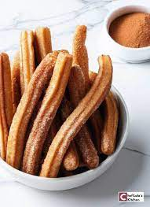

Churros Recipe

A fried piece of dough usually served with chocolate.
Ingredients
- Flour
- Sugar
- Salt
- Vanilla Extract
- Water
- Butter
- Cinnamon Powder
Steps
- Add all ingredients, except flour, to a pot and turn on heat.
- When mixture boils, add all the flour and stir well until a dough is formed.
- Let dough cool down, then roll it into equally-shaped pieces.
- Heat oil in a saucepan .
- Fry the dough until golden brown.
- Serve it warm with tea or chocolate.